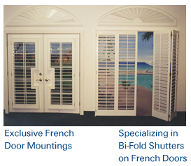

|
WELCOME

Shutter House has been manufacturing shutters since 1991.
The quality and beauty of our shutters is unbeatable!
Shutter House is **ELEGANT **ENERGY EFFICENT * * COST EFFECTIVE **
SHUTTER HOUSE is a Custom Shutter manufacturer serving Las Vegas since 1991. The Quality of our shutters along with the Beauty and Craftsmanship is second to none.
* Beautiful and Functional *
Shutters have beautified homes all the world for hundreds of years. Shutters can be used for many beautiful accents..such as * Room Dividers * to Closet Doors * and much, much more! Because of " our " quality of workmanship,carefree maintenance is an added bonus when you have Shutter House custom design all of your windows and doors. Basswood is the key material used by Shutter House to manufacture all of their shutters. Basswood contains no oils or saps which can bleed thru the paint. Basswood is the only wood that can expand and contract with the extreme temperatures in Las Vegas , without cracking the paint finish.
Shutter House also has some unique production specifications that enhance the shutters, from the details in the frame, to the thickness of the shutters, to louver control built into the panel...these are just a few specialties to look for in Shutter House.
Beauty is in the eye of the beholder, and with Shutter House the " beauty "is endless! Lets' start with "shapes and sizes". All shapes and sizes," curve top arches", " full-louver arches", " eyebrow arches", " half circle to mushroom "...all with moveable louvers, so you can decide how much view or light you wish to allow into your home.
French Doors are even more beautiful when they are dressed with " plantation shutters", for privacy or just to enhance the door without having to change your existing handles or hardware..along with a choice of frame options.
Sliding glass doors have options for shutters that most consumers are not aware of. A choice of " Bi- Fold "...to "Bi-Fold with T-Post" etc. A professional salesperson will be more than happy to explain all of the details and best choice for your door and room, giving you the window treatment you had in mind.
To continue with "beauty " Shutter House " custom colors". That's right, endless choices of paint color or stain color to match you interior décor or stain finish to match any * flooring * furniture * or cabinets * all custom and "No Extra Charge!" Next choose what size louver best compliments your window. Shutter House offers sizes, simply elegant, the larger the louver the more view and light is accomplished.
*Smooth or Sandblasted*
Now think about what best suits the décor in your home, " Smooth finish or Sandblast. Smooth Finish..* Elegant * Dramatic * Classy * to dress up any room in the house. Dining room * Master bedroom * Contemporary * Cape Cod * Dramatic lacquer or matte, so beautiful! Sandblasted Finish * Southwest * Country * Old English * so many ways to accent a office, family room, kitchen, workroom or bonus room.
Energy efficient is # 1 in Las Vegas, with Shutter House our shutters not only give the look of elegance, the craftsmanship for years to come, but will cut your utility bill in the way no other window treatments can! In our summer months,shutters will keep the heat out while still allowing light in. In the winter it gets " Cold",yes cold...and shutters help to insulate just as much. To care for your shutters, all with carefree maintenance...just a soft cloth to wipe off is all there is needed. Shutter House knows you will enjoy your shutters for years to come.
* Cost Effective *
You will be pleasantly surprised at how cost effective shutters are. Our sales professional will price out all of your options and choices when you call for an in-home estimate....Free in-home estimate.
* Made in America *
What more do you need to know!! No Imitations! No shipping from overseas or China! With Shutter House there are no plastic or vinyl made shutters to turn yellow or burn in the sun, crack or peel. Only the original Plantation Shutter * Made in America. The best there is, so trust the best! Quality you can see, you can feel, you can trust with Shutter House.
Shutter House also offers a full line of Hunter Douglas window treatments.....from " Country Wood " to " Ever wood " to " Silhouette, Luminette, Duette, Vignette....these products are also a nice compliment to any room with shutters.
Don't forget to ask about any " specials" or "offers" at the time when you call to make your appointment.
** Elegant ** Energy Efficient * *Cost Effective ** Made in America **
|
 | |